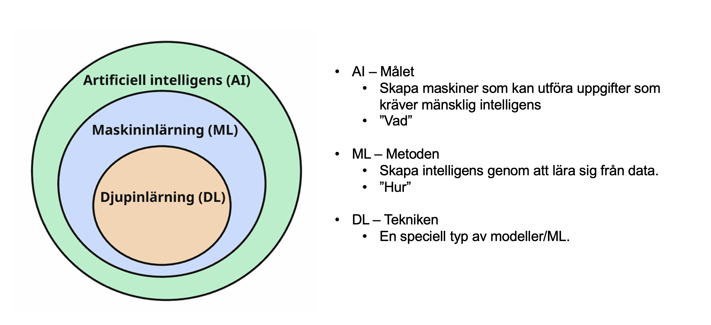
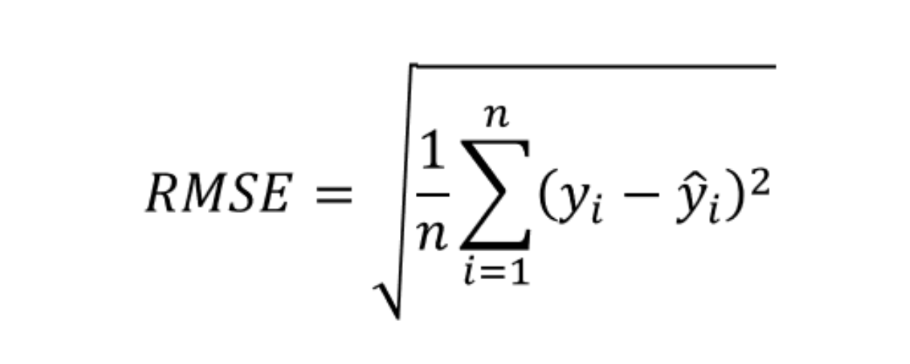

kunskapskontroll AI
D # Del 1
Teoretiska frågor
Denna del syftar till att vi ska börja tänka på vissa grundläggande och centrala koncept inom maskininlärning som är en central del inom AI. Svara gärna kort och koncist. Inkludera svaren som ett sista avsnitt i din rapport.
- Förklara vad AI, ML respektive DL är och relationen mellan begreppen.

AI är förmågan hos datorer att efterlikna människörs intelligens.
ML är metoden för att utveckla algoritmer som kan lära sig från data och göra prediktioner eller beslut utan att vara explicit programmerade för varje uppgift.
DL är en delmängd av ML som använder artificiella neurala nätverk med flera lager (därav “djup”) för att modellera komplexa mönster i data.
Julia delar upp sin data i träning och test. På träningsdatan så tränar hon tre modeller; ”Linjär Regression”, ”Lasso regression” och en ”Random Forest modell”. Hur skall hon välja vilken av de tre modellerna hon skall fortsätta använda när hon inte skapat ett explicit ”valideringsdataset”? > Hon kan använda sig av k-delad korsvalidering på träningsdatan för att utvärdera de tre modellerna och välja den som presterar bäst på valideringsdatan. > Alternativt kan hon använda sig av en metod som kallas “train-test split” där hon delar upp träningsdatan i ett mindre träningsset och ett valideringsset. Hon kan sedan träna modellerna på det mindre träningssetet och utvärdera dem på valideringssetet för att välja den bästa modellen. > K-delad korsvalidering är oftast att föredra eftersom det ger en mer robust utvärdering av modellens prestanda och minskar risken för överanpassning till valideringssetet. särskilt när datamängden är liten.
Vad är ”regressionsproblem? Kan du ge några exempel på modeller som används och potentiella tillämpningsområden?
Regeressionsproblem är en typ av problem där målet är att prediktera ett kontinuerligt värde baserat på en eller flera oberoende variabler.
Exempel på modeller som används för regressionsproblem inkluderar linjär regression, ridge regression, lasso regression, Elastic net, support vector machines, beslutsträd, Ensemble learning, och random forest.
Tillämpningsområden för regressionsproblem kan vara att prediktera huspriser baserat på olika faktorer som storlek och läge, att prediktera löner baserat på utbildning och erfarenhet, eller att prediktera aktiekurser baserat på historiska data.
- Antag att vi har följande regressionsmodell: 𝑌 = 𝛽0 + 𝛽1𝑋 + 𝜀, vad kallas Y, X, 𝛽i och 𝜀 ?
Boken S122:
Y: Den beroende variabeln eller målet som vi vill prediktera.
X: Den oberoende variabeln eller den prediktor som används för att prediktera Y.
𝛽0: Interceptet eller konstanten i modellen, som representerar värdet av Y när X är noll
𝛽1: Den linjära koefficienten som representerar effekten av X på Y.
𝜀: Feltermen eller residualen, som representerar skillnaden mellan den faktiska och den predikterade värdet.
- Hur kan du tolka RMSE och vad används det till?

Boken S106:
RMSE står för Root Mean Squared Error och är ett mått på hur väl en regressionsmodell predikterar det faktiska värdet. Det beräknas genom att ta kvadratroten av medelvärdet av de kvadrerade skillnaderna mellan de faktiska och predikterade värdena.
RMSE används för att kunna tolka hur stort fel en modell gör. Ett lägre RMSE indikerar en bättre passform av modellen till data. Det är särskilt använd för att jämföra olika modeller eller för att utvärdera hur väl en modell presterar på nya data.
- Vad är ”klassificieringsproblem? Kan du ge några exempel på modeller somanvänds och potentiella tillämpningsområden?
Boken S151:
Klassificeringsproblem är en typ av problem där målet är att prediktera kategoriska utdata med hjälp av indata.
Boken S166:
Exempel på modeller som används för klassificeringsproblem inkluderar logistisk regression, support vector machines, beslutsträd, Ensemble learning, random forest.
Boken S151: > Tillämpningsområden för klassificeringsproblem kan vara:
Kundanalys - prediktera om en kund kommer att köpa en produkt eller inte, att segmentera kunder i olika grupper baserat på deras beteende, eller att prediktera kundlojalitet.
Sjukvård - att prediktera om en patient har en viss sjukdom eller inte (sjuk eller frisk) baserat på medicinska data såsom blodtryck, puls och så vidare.
Bildigenkänning - att klassificera bilder i olika kategorier, såsom att identifiera om en bild innehåller en katt eller en hund.
Anomalidetektion - att identifiera defekta produkter i en tillverkningsprocess, att upptäcka bedrägerier i finansiella transaktioner, eller att identifiera avvikande beteende i nätverkssäkerhet.
Finans - Preddiktera om en aktie kommer att gå upp eller ner baserat på exempelvis företagsinformation såsom lönsamhet, omsättning och så vidare.
Kreditrisk - Bedöma om en bankkund ska beviljas ett lån eller inte baserat på faktorer som inkomst, ålder, civilstånd och så vidare.